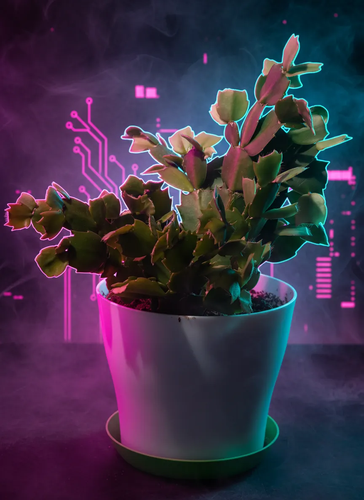
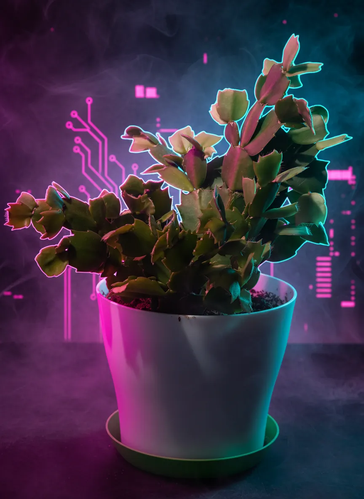

Schlumbergera truncata

 



Plant Mood
They say I brighten the room, but honestly, it's just the desk. My life's an unending loop of 'photosynthesis now, thrive later' on this work surface. I'm practically a living screensaver. Don't touch me though; I'm not that kind of succulent. My roots run deep, but my emotional availability, not so much. I'm a Schlumbergera, not your therapist. Now, if you'll excuse me, I believe a stray dust bunny just ambled into my personal space.
Plant Details
| Scientific Name | Schlumbergera truncata |
| Size | 25 |
| Environment | Livingroom Workdesk |
| Has Grow Light | Unknown |
| Pot Type | potPlastic |
| Pot Soil | coconutCoirOrPeat |
| Pot Size | 15 |
| Has Drainage | Yes |
Care Schedule
| Action | Last Done | Next Due |
|---|---|---|
| Watering | ||
| Fertilizing | - | |
| Repotting | ||
| Cleaning | - | |
| Progress Update | - | |
| Misting |